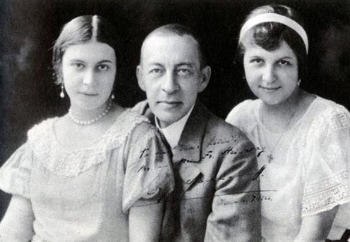

Si l’on pouvait paraphraser Nerval : « Je donnerais tout Rossini, tout Mozart et tout Weber… », l’humble compositeur que je suis donnerait tout ou presque pour avoir écrit la Première fantaisie de Rachmaninov pour piano, son Élégie de l’opus 3, conçue à seulement 19 ans. Sans doute ai-je entendu là, tardivement, au midi de mon existence, quelque chose d’éminemment subjectif, une sorte de récit musical d’une page particulière de ma vie ; mais je préfère insister ici sur la forme, qui est parfaite, comme on l’entend, comme on le voit, comme on le lit dans tout chef-d’œuvre. Bizarrement, on connait mieux la deuxième de ces trois pièces, le Prélude, très original il est vrai : dans ma jeunesse estudiantine, mon goût pour les facéties m’avait poussé à le jouer à l’un de ces multiples examens, tant pratiques que théoriques, qu’il fallait passer pour obtenir son diplôme de musicologie ; ce qui n’avait pas manqué de déconcerter le jury ; en effet, comment évaluer la virtuosité de l’étudiant sur une telle œuvre, homophonique et en même temps si grandiose ?
Le Prélude est donc mieux connu que l’Élégie… et pourtant il me semble que c’est plutôt dans l’Élégie que Serguei, à 19 ans, est déjà pleinement Rachmaninov ; et il est beau de savoir qu’avec ses deux sœurs de l’opus 3, elle est dédiée à son professeur Anton Arenski.
Car Rachmaninov est un héritier, le continuateur du Siècle d’or de la Russie (j’entends par cette expression, en gros, 1814-1914, d’Alexandre Ier à Nicolas II). Au XXe siècle, la recherche de la nouveauté à n’importe quel prix conduira nombre de spécialistes à réfréner leur admiration pour cet artiste, que pour ma part je regarde au contraire comme le plus grand compositeur du siècle - si tant est qu’il soit toujours raisonnable de faire monter les grands hommes sur un podium. Bien sûr, le Stravinsky du début, et d’autres Russes, Scriabine, Prokofiev, Chostakovitch ; quelques Allemands encore, quelques Français, quelques Britanniques, quelques Italiens toujours, ont apporté chacun leur pierre à ce siècle qui, dans les arts comme dans les lettres, ne fut grand qu’en sa première moitié - je fais exception, en littérature, de Soljenitsyne, le géant, mais inattendu, miraculeux pourrait-on dire, dominant cette seconde moitié, comme Proust avait dominé la première.
L’un des critères qui m’invitent à donner le premier rang à Rachmaninov, par-delà la grandeur de sa musique, est dans sa diversité. Certes, ce n’est pas un critère absolu : Wagner est le maître de l’opéra, Chopin le maître du piano. En outre, Rachmaninov n’est pas toujours d’un niveau égal, par exemple dans ses opéras. Mais qui d’autre que Mozart aura été le plus grand dans tous les genres ? Il nous suffit d’écrire que, tandis que Rachmaninov faisait fructifier son héritage du Siècle d’or russe, les recherches musicales du XXe siècle ont le plus souvent fourvoyé les compositeurs dans des impasses : est-ce que, sans leurs fourvoiements, l’un d’eux aurait pu rivaliser avec lui ? Nul ne le saura jamais.

Rachmanivov et ses filles
D’ailleurs, l’histoire enseigne toujours la même chose : c’est avec le temps que les proportions se dessinent, que les distances se mesurent. Aujourd’hui, il n’est plus possible de se boucher les oreilles, Rachmaninov est bien le dernier des géants de la musique, aujourd’hui plus que jamais ; dans l’attente des prochains génies qui tardent encore à venir, mais qui viendront : le cas de Soljenitsyne, déjà cité et que l’on pourrait transposer en musique ou ailleurs, nous convainc que rien n’est perdu, que la civilisation européenne peut encore être servie par des créateurs de cette envergure.
Il n’est pas certain que Rachmaninov lui-même ait eu pleinement conscience de ce premier rang auquel je l’assigne. Tout le temps qu’il a vécu, on ne pouvait que reconnaître en lui un grand compositeur ; non pas donc mésestimé - c’eût été impossible même avec la plus complète mauvaise foi - mais sous-estimé, ne serait-ce que parce qu’il incarnait la grandeur d’un âge disparu, à une époque où, à l’occident presqu’autant qu’à orient de l’Europe, la parole et l’écrit étaient déjà - plus encore qu’aujourd’hui - confisquées par des idéologues pressés de nous le faire oublier. Inutile de rappeler les épreuves qu’il a dû traverser, qui ont longtemps affecté sa créativité : le même phénomène a d’ailleurs été observé chez d’autres, Stravinsky par exemple, que son exil a privé d’imagination. L’effondrement de la société qu’il avait connue fut pour lui comme la fin du monde, comme le sac de Rome dans l’esprit de saint Augustin. S’il n’a pas souffert matériellement - parce que, réfugié en Amérique où il fut bien accueilli, sa renommée déjà acquise et sa virtuosité lui permirent de passer d’une carrière de compositeur à celle de concertiste - il a dû attendre longtemps avant que sa muse ne revienne lui rendre visite. De fait, l’essentiel de sa musique était déjà écrit quand survint la tragédie de son pays. Le destin l’a donc maintenu dans cette posture que l’on peut juger figée, mais qui met d’autant mieux en lumière ce qu’il convient de faire pour retrouver le chemin qu’il arpentait, celui de la plus grande beauté.
Partager cette page